<!DOCTYPE html>
<html lang="en">
<head>
  <meta charset="utf-8">
  <meta name="viewport" content="width=device-width, initial-scale=1.0">
  <title>Chapter 10: Geometry and Algebra - SCERT Class 10 Mathematics</title>
  <style>

:root {
  --bg-color: #fcfcfd;
  --card-bg: #ffffff;
  --text-color: #1e293b;
  --text-muted: #64748b;
  --primary-color: #0284c7;
  --primary-light: #e0f2fe;
  --border-color: #e2e8f0;
  --radius: 10px;
  --shadow: 0 4px 6px -1px rgb(0 0 0 / 0.05), 0 2px 4px -2px rgb(0 0 0 / 0.05);
}

body {
  font-family: -apple-system, BlinkMacSystemFont, "Segoe UI", Roboto, "Noto Sans Malayalam", "Manjari", "Gayathri", sans-serif;
  background-color: var(--bg-color);
  color: var(--text-color);
  line-height: 1.8;
  font-size: 1.1rem;
  margin: 0;
  padding: 0;
}

.container {
  max-width: 860px;
  margin: 0 auto;
  padding: 2.5rem 1.5rem 5rem 1.5rem;
}

header {
  margin-bottom: 2.5rem;
  padding-bottom: 1.5rem;
  border-bottom: 2px solid var(--border-color);
}

.badge-row {
  display: flex;
  gap: 0.5rem;
  margin-bottom: 0.75rem;
}

.badge {
  display: inline-block;
  font-size: 0.75rem;
  font-weight: 700;
  text-transform: uppercase;
  letter-spacing: 0.05em;
  padding: 0.25rem 0.65rem;
  border-radius: 9999px;
  background: var(--primary-light);
  color: var(--primary-color);
}

.badge-medium {
  background: #fef3c7;
  color: #b45309;
}

h1 {
  font-size: 2.1rem;
  font-weight: 800;
  margin: 0.5rem 0 1rem 0;
  line-height: 1.3;
  color: #0f172a;
}

.nav-bar {
  display: flex;
  justify-content: space-between;
  margin: 1.5rem 0;
  font-size: 0.95rem;
}

.nav-bar a {
  color: var(--primary-color);
  text-decoration: none;
  font-weight: 600;
  padding: 0.5rem 1rem;
  border-radius: var(--radius);
  background: var(--card-bg);
  border: 1px solid var(--border-color);
  transition: all 0.2s ease;
}

.nav-bar a:hover {
  background: var(--primary-light);
  border-color: var(--primary-color);
}

.nav-bar .disabled {
  color: var(--text-muted);
  pointer-events: none;
  border-color: transparent;
  background: transparent;
}

.page-section {
  background: var(--card-bg);
  border: 1px solid var(--border-color);
  border-radius: var(--radius);
  box-shadow: var(--shadow);
  padding: 2rem;
  margin-bottom: 2.5rem;
}

.page-header {
  display: flex;
  align-items: center;
  justify-content: space-between;
  margin-bottom: 1.25rem;
  padding-bottom: 0.5rem;
  border-bottom: 1px dashed var(--border-color);
}

.page-number {
  font-size: 0.8rem;
  font-weight: 700;
  text-transform: uppercase;
  color: var(--text-muted);
  letter-spacing: 0.05em;
}

.page-content p {
  margin: 0 0 1.25rem 0;
  white-space: pre-wrap;
  word-break: break-word;
}

.page-content p:last-child {
  margin-bottom: 0;
}

.diagram-card {
  margin: 2rem 0;
  text-align: center;
  background: #f8fafc;
  border: 1px solid var(--border-color);
  border-radius: var(--radius);
  padding: 1rem;
  overflow: hidden;
}

.diagram-card img {
  max-width: 100%;
  height: auto;
  border-radius: calc(var(--radius) - 4px);
  display: inline-block;
  box-shadow: 0 2px 4px rgba(0,0,0,0.04);
}

.diagram-card figcaption {
  font-size: 0.85rem;
  color: var(--text-muted);
  margin-top: 0.75rem;
  font-weight: 500;
}

footer {
  margin-top: 3rem;
  padding-top: 2rem;
  border-top: 2px solid var(--border-color);
}

  </style>
</head>
<body>
  <div class="container">
    <header>
      <div class="badge-row">
        <span class="badge badge-medium">English Medium</span>
        <span class="badge">SCERT Class 10 Mathematics</span>
        <span class="badge">Part 2</span>
      </div>
      <h1>Chapter 10: Geometry and Algebra</h1>
      <div class="nav-bar"><a href="chapter_09_solids.html">← Chapter 9: Solids</a><a href="index.html">☰ Index</a><a href="chapter_11_polynomials.html">Chapter 11: Polynomials →</a></div>
    </header>

    <main>
      <section class="page-section" id="page-35">
  <div class="page-header"><span class="page-number">Page 35</span></div>
  <figure class="diagram-card" id="fig_ch10_p035_01">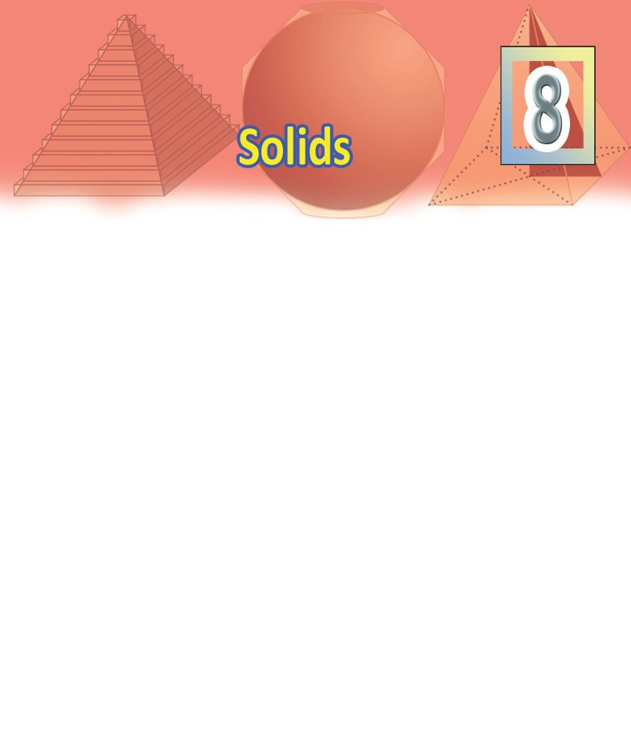<figcaption>Figure fig_ch10_p035_01 (Page 35)</figcaption></figure>
  <figure class="diagram-card" id="fig_ch10_p035_02">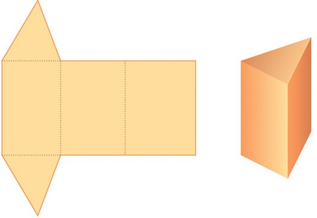<figcaption>Figure fig_ch10_p035_02 (Page 35)</figcaption></figure>
  <figure class="diagram-card" id="fig_ch10_p035_03">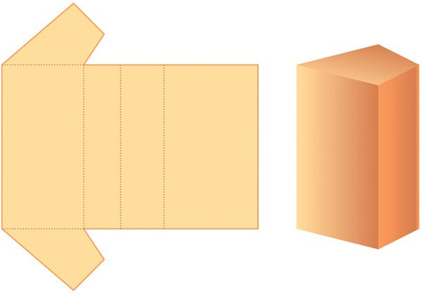<figcaption>Figure fig_ch10_p035_03 (Page 35)</figcaption></figure>
  <div class="page-content">
    <p>Pyramids
We can make prisms by cutting thick paper in various ways and pasting the
edges.</p>
    <p>And we have learnt much about them.
Let’s make another kind of solid:</p>
  </div>
</section><section class="page-section" id="page-36">
  <div class="page-header"><span class="page-number">Page 36</span></div>
  <figure class="diagram-card" id="fig_ch10_p036_01"><figcaption>Figure fig_ch10_p036_01 (Page 36)</figcaption></figure>
  <figure class="diagram-card" id="fig_ch10_p036_02">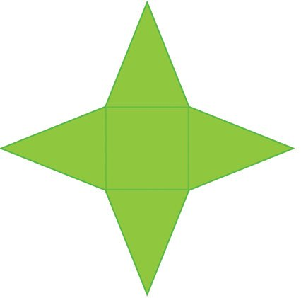<figcaption>Figure fig_ch10_p036_02 (Page 36)</figcaption></figure>
  <figure class="diagram-card" id="fig_ch10_p036_03">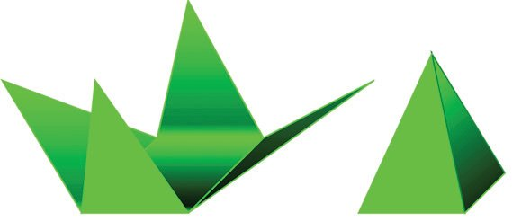<figcaption>Figure fig_ch10_p036_03 (Page 36)</figcaption></figure>
  <figure class="diagram-card" id="fig_ch10_p036_04">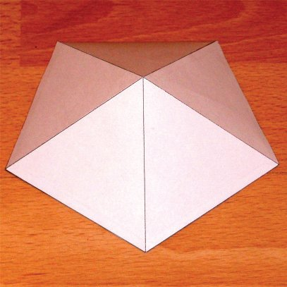<figcaption>Figure fig_ch10_p036_04 (Page 36)</figcaption></figure>
  <figure class="diagram-card" id="fig_ch10_p036_05">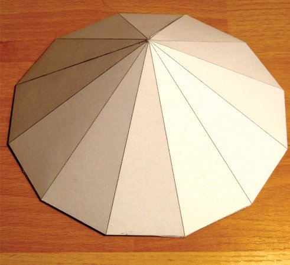<figcaption>Figure fig_ch10_p036_05 (Page 36)</figcaption></figure>
  <figure class="diagram-card" id="fig_ch10_p036_06"><figcaption>Figure fig_ch10_p036_06 (Page 36)</figcaption></figure>
  <div class="page-content">
    <p>Mathematics</p>
    <p>X
First, cut out a figure like this in paper.</p>
    <p>Pyramids in GeoGebra
We have seen in Class 9 how
prisms can be drawn in
GeoGebra. Now let’s see how
pyramids can be drawn. Open
3D Graphics and make the
necessary preparations (See the
section, Solids in GeoGebra of
the lesson, Prisms in the Class 9
textbook) Draw a square in
Graphics. Choose Extrude to
Pyramid or Cone in 3D Graphics
and click on the square. In the
window opening up, type the
height of the pyramid. (we can
also make a slider and give its
name as the height).</p>
    <p>A square in the middle and four triangles around it; all four of
them are isosceles triangles and they are equal. Now fold and
paste as shown below.</p>
    <p>What shape is this? Can’t be called a prism; prisms have
two equal bases and rectangles on the sides. In the shape
we have made now, we have a square at the bottom, a
point on top and triangles all around.
Instead of square, the base can be some other rectangle,
a triangle or some other polygon. Try! (It is better looking
when the base is a regular polygon.)
Such a solid is generally called a pyramid.</p>
    <p>188</p>
  </div>
</section><section class="page-section" id="page-37">
  <div class="page-header"><span class="page-number">Page 37</span></div>
  <figure class="diagram-card" id="fig_ch10_p037_01"><figcaption>Figure fig_ch10_p037_01 (Page 37)</figcaption></figure>
  <figure class="diagram-card" id="fig_ch10_p037_02">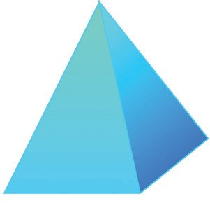<figcaption>Figure fig_ch10_p037_02 (Page 37)</figcaption></figure>
  <figure class="diagram-card" id="fig_ch10_p037_03">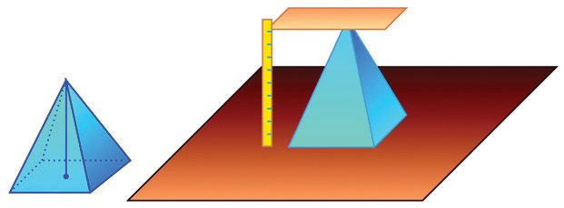<figcaption>Figure fig_ch10_p037_03 (Page 37)</figcaption></figure>
  <figure class="diagram-card" id="fig_ch10_p037_04">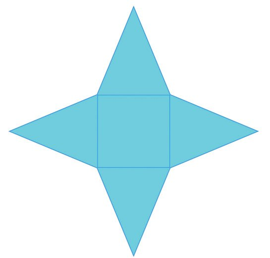<figcaption>Figure fig_ch10_p037_04 (Page 37)</figcaption></figure>
  <figure class="diagram-card" id="fig_ch10_p037_05"><figcaption>Figure fig_ch10_p037_05 (Page 37)</figcaption></figure>
  <div class="page-content">
    <p>Solids
Apex</p>
    <p>Lat
era
l ed
ge</p>
    <p>The sides of the polygon forming the base of a
pyramid are called base edges and the other sides
of the triangles are called lateral edges. The
topmost point of a pyramid is called its apex.</p>
    <p>Base edge</p>
    <p>The height of a prism is the distance between its bases, isnt it? The height of a
pyramid is the perpendicular distance from the apex to the base.</p>
    <p>Area
What is the surface area of a square pyramid of base edges
10 centimetres and lateral edges 13 centimetres? The surface
area is the area of paper needed to make it. How will it look,
if we cut this pyramid open and lay it flat?</p>
    <p>10 cm</p>
    <p>13
cm</p>
    <p>cm
13</p>
    <p>189</p>
    <p>Let’s see how GeoGebra helps us
to see the ‘cut and spread’ shape
of a pyramid. Make a pyramid in
3D graphics as described earlier.
Choose Net and click on the
pyramid. We get the shape of the
paper used to make it (It is called
the net of the solid). We also get
a slider in Graphics. By moving
the slider, we can see how the
pyramid is made from the net. We
can also hide the original pyramid
by clicking against the pyramid in
the Algebra window.</p>
  </div>
</section><section class="page-section" id="page-38">
  <div class="page-header"><span class="page-number">Page 38</span></div>
  <figure class="diagram-card" id="fig_ch10_p038_01"><figcaption>Figure fig_ch10_p038_01 (Page 38)</figcaption></figure>
  <figure class="diagram-card" id="fig_ch10_p038_02">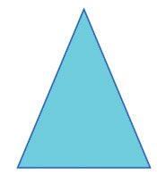<figcaption>Figure fig_ch10_p038_02 (Page 38)</figcaption></figure>
  <figure class="diagram-card" id="fig_ch10_p038_03">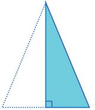<figcaption>Figure fig_ch10_p038_03 (Page 38)</figcaption></figure>
  <figure class="diagram-card" id="fig_ch10_p038_04">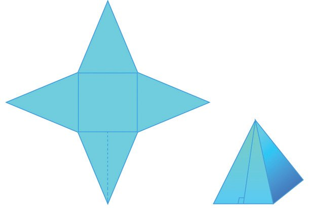<figcaption>Figure fig_ch10_p038_04 (Page 38)</figcaption></figure>
  <figure class="diagram-card" id="fig_ch10_p038_05"><figcaption>Figure fig_ch10_p038_05 (Page 38)</figcaption></figure>
  <div class="page-content">
    <p>Mathematics</p>
    <p>X</p>
    <p>cm
13</p>
    <p>The area of the triangle is half the product of its
base and height, isn’t it?</p>
    <p>13
cm</p>
    <p>The area of the square is easily seen to be 100 square centimetres. What
about the triangles?</p>
    <p>10 cm</p>
    <p>cm
13</p>
    <p>For that, we need the height of the triangle. Since
the triangle is isosceles, this altitude bisects the
base.
So using Pythagoras Theorem, the height of the
triangle is
13 − 5 = 12 centimetres
2</p>
    <p>5 cm</p>
    <p>2</p>
    <p>Thus the area of the triangle is 5 × 12 = 60 square centimetres.</p>
    <p>12 cm</p>
    <p>Height and slant height
Draw a pyramid in GeoGebra. Click
Midpoint or Centre to mark the mid
points of a base edge and the midpoint
of a diagonal of the base. Use Segment
to mark the height and slant height of
the pyramid. Use Polygon to make the
right triangle with height, slant height
and half the base edge as sides. Using
Net, the pyramid can be cut and spread.
We can also hide the pyramid.</p>
    <p>190</p>
    <p>12 cm</p>
    <p>What will be the height of the triangle, when the paper is turned into a pyramid?</p>
  </div>
</section><section class="page-section" id="page-39">
  <div class="page-header"><span class="page-number">Page 39</span></div>
  <figure class="diagram-card" id="fig_ch10_p039_01"><figcaption>Figure fig_ch10_p039_01 (Page 39)</figcaption></figure>
  <figure class="diagram-card" id="fig_ch10_p039_02"><figcaption>Figure fig_ch10_p039_02 (Page 39)</figcaption></figure>
  <figure class="diagram-card" id="fig_ch10_p039_03"><figcaption>Figure fig_ch10_p039_03 (Page 39)</figcaption></figure>
  <figure class="diagram-card" id="fig_ch10_p039_04"><figcaption>Figure fig_ch10_p039_04 (Page 39)</figcaption></figure>
  <figure class="diagram-card" id="fig_ch10_p039_05">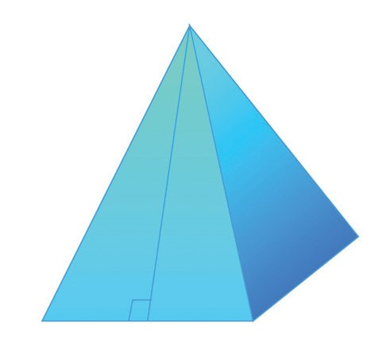<figcaption>Figure fig_ch10_p039_05 (Page 39)</figcaption></figure>
  <figure class="diagram-card" id="fig_ch10_p039_06">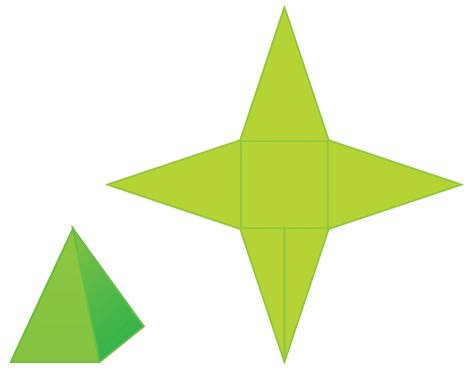<figcaption>Figure fig_ch10_p039_06 (Page 39)</figcaption></figure>
  <div class="page-content">
    <p>Solids</p>
    <p>Now do this problem: what is the surface area of a square
pyramid with base edges 2 metres and lateral edges
3 metres?</p>
    <p>heigh
Slant</p>
    <p>Lat
era
l ed
ge</p>
    <p>We have seen the relation between the base edge, lateral
edge and slant height of a pyramid in the problem we did
just now. As shown in the picture on the right, there is a
right triangle on each side of the pyramid - its
perpendicular sides are the slant height and half the base
edge, the hypotenuse is a lateral edge.</p>
    <p>t</p>
    <p>This length is called the slant height of the pyramid.</p>
    <p>Half the base edge</p>
    <p>The base area is 4 square metres. To compute the areas
of lateral faces, we need the slant height. In the right triangle
mentioned above, one side is half the base edge, that is,
1 metre and the hypotenuse is the lateral edge of 3 metres.
So, the slant height is
2</p>
    <p>1m</p>
    <p>3m</p>
    <p>2</p>
    <p>3m</p>
    <p>3 − 1 = 2 2 metres</p>
    <p>1m</p>
    <p>Using this, the area of each triangular face is
1
2</p>
    <p>2m</p>
    <p>× 2 × 2 2 = 2 2 square metres.</p>
    <p>So, the surface area of the pyramid is,</p>
    <p>(</p>
    <p>)</p>
    <p>4 + 4 × 2 2 = 4 + 8 2 square metres.</p>
    <p>If not satisfied with this, a calculator can be used, (or an approximate value of
2 recalled) to compute this as 15.31 square metres.
(1)</p>
    <p>A square of side 5 centimetres, and four isosceles triangles of base
5 centimetres and height 8 centimetres, are to be put together to make
a square pyramid. How many square centimetres of paper is needed?</p>
    <p>(2)</p>
    <p>A toy is in the shape of a square pyramid of base edge 16 centimetres
and slant height 10 centimetres. What is the total cost of painting 500
such toys, at 80 rupees per square metre?</p>
    <p>191</p>
  </div>
</section><section class="page-section" id="page-40">
  <div class="page-header"><span class="page-number">Page 40</span></div>
  <figure class="diagram-card" id="fig_ch10_p040_01"><figcaption>Figure fig_ch10_p040_01 (Page 40)</figcaption></figure>
  <figure class="diagram-card" id="fig_ch10_p040_02">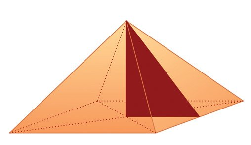<figcaption>Figure fig_ch10_p040_02 (Page 40)</figcaption></figure>
  <figure class="diagram-card" id="fig_ch10_p040_03"><figcaption>Figure fig_ch10_p040_03 (Page 40)</figcaption></figure>
  <figure class="diagram-card" id="fig_ch10_p040_04">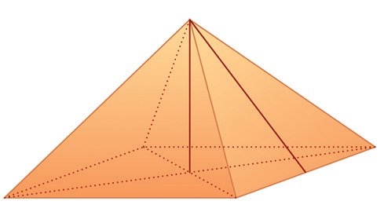<figcaption>Figure fig_ch10_p040_04 (Page 40)</figcaption></figure>
  <figure class="diagram-card" id="fig_ch10_p040_05">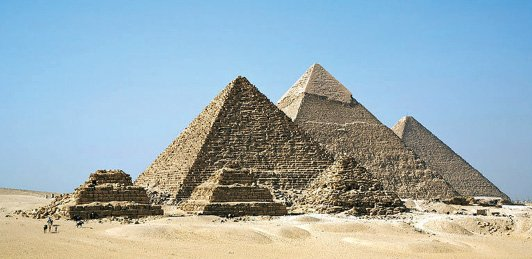<figcaption>Figure fig_ch10_p040_05 (Page 40)</figcaption></figure>
  <div class="page-content">
    <p>Mathematics</p>
    <p>X</p>
    <p>(3)</p>
    <p>The lateral faces of a square pyramid are equilateral triangles and the
length of a base edge is 30 centimetres. What is its surface area?</p>
    <p>(4)</p>
    <p>The perimeter of the base of square pyramid is 40 centimetres and the
total length of all its edges is 92 centimetres. Calculate its surface area.</p>
    <p>(5)</p>
    <p>Can we make a square pyramid with the lateral surface area equal to
the base area?
Height and slant height
The height of a pyramid is often an important measure. See this problem:
A tent is to be made in the shape of a square pyramid of base
edges 6 metres and height 4 metres. How many square metres
of canvas is needed to make it?
To calculate the area of the triangular faces of the tent, we need the slant
height. How do we compute it using the given specifications?
See this picture:</p>
    <p>4 metres</p>
    <p>A</p>
    <p>M</p>
    <p>C</p>
    <p>6 metres</p>
    <p>4 metres</p>
    <p>Pyramids of Egypt
The very word pyramid brings to our
mind the great pyramids of Egypt.
138 such pyramids are found from
various parts of Egypt. Many of
them were built around 2000 BC.</p>
    <p>The slant height we need is AM. Joining CM, we get a right
triangle with AM as hypotenuse. What is the length of CM in
it?
A</p>
    <p>C</p>
    <p>3 metres</p>
    <p>M</p>
    <p>6 metres</p>
    <p>From the picture, AM =</p>
    <p>192</p>
    <p>32 + 4 2 = 5 metres.</p>
  </div>
</section><section class="page-section" id="page-41">
  <div class="page-header"><span class="page-number">Page 41</span></div>
  <figure class="diagram-card" id="fig_ch10_p041_01"><figcaption>Figure fig_ch10_p041_01 (Page 41)</figcaption></figure>
  <figure class="diagram-card" id="fig_ch10_p041_02"><figcaption>Figure fig_ch10_p041_02 (Page 41)</figcaption></figure>
  <figure class="diagram-card" id="fig_ch10_p041_03"><figcaption>Figure fig_ch10_p041_03 (Page 41)</figcaption></figure>
  <figure class="diagram-card" id="fig_ch10_p041_04"><figcaption>Figure fig_ch10_p041_04 (Page 41)</figcaption></figure>
  <figure class="diagram-card" id="fig_ch10_p041_05">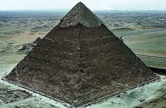<figcaption>Figure fig_ch10_p041_05 (Page 41)</figcaption></figure>
  <figure class="diagram-card" id="fig_ch10_p041_06">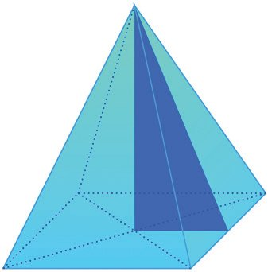<figcaption>Figure fig_ch10_p041_06 (Page 41)</figcaption></figure>
  <figure class="diagram-card" id="fig_ch10_p041_07"><figcaption>Figure fig_ch10_p041_07 (Page 41)</figcaption></figure>
  <figure class="diagram-card" id="fig_ch10_p041_08"><figcaption>Figure fig_ch10_p041_08 (Page 41)</figcaption></figure>
  <figure class="diagram-card" id="fig_ch10_p041_09"><figcaption>Figure fig_ch10_p041_09 (Page 41)</figcaption></figure>
  <div class="page-content">
    <p>Solids</p>
    <p>So, to make the tent, four isosceles triangles of base 6 metres and height
1</p>
    <p>5 metres are needed. Their total area is 4 × 2 × 6 × 5 = 60 square metres.
So this much canvas is needed to make the tent.
In this problem, we have found something which is true
in the case of all square pyramids. Within every square
pyramid, we can imagine a right triangle with
perpendicular sides as the height of the pyramid and
half the base edge and hypotenuse as the slant height.</p>
    <p>Slan
t he
ight</p>
    <p>Height</p>
    <p>Great Pyramid
The largest pyramid in
Egypt is the Great
Pyramid of Giza.
Its base is a square of
almost half a lakh square metres and its
height is about 140 metres. It is estimated
that about 20 years would have been
needed to complete it. These royal tombs
built with huge blocks of stones stacked
with precision to end in a point are living
symbols of human labour, engineering skill
and mathematical knowledge.</p>
    <p>Half the base edge</p>
    <p>18 cm</p>
    <p>Using a square and four
triangles with dimensions as
specified in the picture, a
pyramid is made.</p>
    <p>What is the height of this pyramid?</p>
    <p>24 cm</p>
    <p>What if the square and triangles are like this?</p>
    <p>30
cm</p>
    <p>(1)</p>
    <p>24 cm</p>
    <p>193</p>
  </div>
</section><section class="page-section" id="page-42">
  <div class="page-header"><span class="page-number">Page 42</span></div>
  <figure class="diagram-card" id="fig_ch10_p042_01"><figcaption>Figure fig_ch10_p042_01 (Page 42)</figcaption></figure>
  <figure class="diagram-card" id="fig_ch10_p042_02"><figcaption>Figure fig_ch10_p042_02 (Page 42)</figcaption></figure>
  <figure class="diagram-card" id="fig_ch10_p042_03"><figcaption>Figure fig_ch10_p042_03 (Page 42)</figcaption></figure>
  <figure class="diagram-card" id="fig_ch10_p042_04">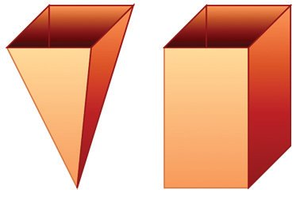<figcaption>Figure fig_ch10_p042_04 (Page 42)</figcaption></figure>
  <figure class="diagram-card" id="fig_ch10_p042_05">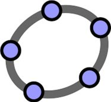<figcaption>Figure fig_ch10_p042_05 (Page 42)</figcaption></figure>
  <div class="page-content">
    <p>Mathematics</p>
    <p>X
A square pyramid of base edge 10 centimetres and height 12 centimetres
is to be made of paper. What should be the dimensions of the triangles?</p>
    <p>(3)</p>
    <p>Prove that in any square pyramid, the squares of the height, slant height
and lateral edge are in arithmetic sequence.</p>
    <p>(4)</p>
    <p>A square pyramid is to be made with the
triangle shown here as a lateral face. What
would be its height? What if the base edge
is 40 centimetres instead of 30
centimetres?</p>
    <p>25
cm</p>
    <p>cm
25</p>
    <p>(2)</p>
    <p>30 cm</p>
    <p>Can we make a square pyramid with any four equal isosceles
triangles?
Volume of a pyramid
We have seen that the volume of any
prism is equal to the product of the
base area and the height. What
about the volume of a pyramid?
Let’s take the case of a square
pyramid. Make a hollow square
pyramid with thick paper and also a
square prism of the same base and
height.
Pyramid Volume
Draw a square pyramid and a square
prism of the same base and with the
same height in GeoGebra . To
distinguish between them, change the
colour of the pyramid and make
Opacity 100. (Object properties →
Colour ). Find their volumes using
Volume. What is the relation between
them? Change the base and height
and see.</p>
    <p>Fill the pyramid with sand and transfer it to the prism. Measure
the height of the sand in the prism and see what fraction of the
height of the prism it is. A third, isn’t it? So to fill the prism,
how many times should we fill the pyramid?
Thus we see that the volume of the prism is three times the
volume of the pyramid. (A mathematical explanation of this is
given at the end of this lesson).
We have seen in Class 9 that the volume of a prism is equal
to the product of the base area and the height.</p>
    <p>194</p>
  </div>
</section><section class="page-section" id="page-43">
  <div class="page-header"><span class="page-number">Page 43</span></div>
  <figure class="diagram-card" id="fig_ch10_p043_01"><figcaption>Figure fig_ch10_p043_01 (Page 43)</figcaption></figure>
  <figure class="diagram-card" id="fig_ch10_p043_02"><figcaption>Figure fig_ch10_p043_02 (Page 43)</figcaption></figure>
  <figure class="diagram-card" id="fig_ch10_p043_03"><figcaption>Figure fig_ch10_p043_03 (Page 43)</figcaption></figure>
  <figure class="diagram-card" id="fig_ch10_p043_04"><figcaption>Figure fig_ch10_p043_04 (Page 43)</figcaption></figure>
  <div class="page-content">
    <p>Solids</p>
    <p>So what can we say about the volume of a square pyramid?
The volume of a square pyramid is equal to a third of the product
of the base area and the height.</p>
    <p>For example, the volume of a square pyramid of base edge 10 centimetres
2</p>
    <p>1</p>
    <p>and height 8 centimetres is 3 × 102 × 8 = 266 3 cubic centimetres.
A metal cube of edge 15 centimetres is melted and recast into a square pyramid
of base edge 25 centimetres. What is its height?
The volume of the cube is 153 cubic centimetres. The volume of the square
pyramid is also this. And the volume of a pyramid is a third of the product of
the base area and height. Since the base area of our pyramid is 252 square
3</p>
    <p>centimetres, a third of the height is 152 and so the height is,
25</p>
    <p>3×</p>
    <p>(1)</p>
    <p>3</p>
    <p>15
= 16.2 centimetres.
252</p>
    <p>What is the volume of a square pyramid of base edge 10 centimetres
and slant height 15 centimetres?</p>
    <p>(2)</p>
    <p>Two square pyramids have the same volume. The base edge of one is
half that of the other. How many times the height of the second pyramid
is the height of the first?</p>
    <p>(3)</p>
    <p>The base edges of two square pyramids are in the ratio 1 : 2 and their
heights in the ratio 1 : 3. The volume of the first is 180 cubic centimetres.
What is the volume of the second?</p>
    <p>(4)</p>
    <p>All edges of a square pyramid are 18 centimetres. What is its volume?</p>
    <p>(5)</p>
    <p>The slant height of a square pyramid is 25 centimetres and its surface
area is 896 square centimetres. What is its volume?</p>
    <p>195</p>
  </div>
</section><section class="page-section" id="page-44">
  <div class="page-header"><span class="page-number">Page 44</span></div>
  <figure class="diagram-card" id="fig_ch10_p044_01"><figcaption>Figure fig_ch10_p044_01 (Page 44)</figcaption></figure>
  <figure class="diagram-card" id="fig_ch10_p044_02"><figcaption>Figure fig_ch10_p044_02 (Page 44)</figcaption></figure>
  <figure class="diagram-card" id="fig_ch10_p044_03">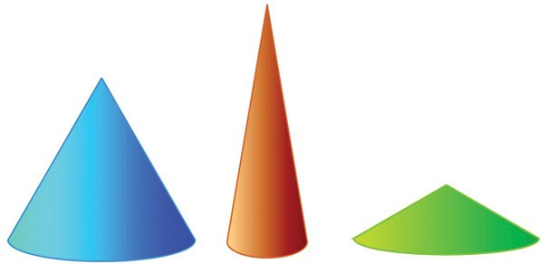<figcaption>Figure fig_ch10_p044_03 (Page 44)</figcaption></figure>
  <figure class="diagram-card" id="fig_ch10_p044_04">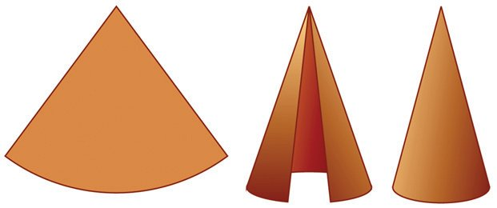<figcaption>Figure fig_ch10_p044_04 (Page 44)</figcaption></figure>
  <figure class="diagram-card" id="fig_ch10_p044_05"><figcaption>Figure fig_ch10_p044_05 (Page 44)</figcaption></figure>
  <div class="page-content">
    <p>Mathematics</p>
    <p>(6)</p>
    <p>X
All edges of a square pyramid are of the same length and its height is
12 centimetres. What is its volume?</p>
    <p>(7)</p>
    <p>What is the surface area of a square pyramid of base perimeter
64 centimetres and volume 1280 cubic centimetres?
Cone
Cylinders are prism-like solids with circular bases. Similarly, we have pyramidlike solids with circular bases:</p>
    <p>They are called cones.
We can make a cylinder by rolling up a rectangle. Likewise, we can make a
cone by rolling up a sector of a circle.
What is the relation between the dimensions of the sector we start with and
the cone we end up with?</p>
    <p>Cone
We can draw cones in
GeoGebra, just as we drew
pyramids. Draw a circle in
Graphics and in 3D
Graphics, use Extrude to
Pyramid or Cone. The base
radius and height can be
changed using sliders.</p>
    <p>The radius of the sector becomes the slant height of the cone. The arc
length of the sector becomes the circumference of the base of the cone.</p>
    <p>196</p>
  </div>
</section><section class="page-section" id="page-45">
  <div class="page-header"><span class="page-number">Page 45</span></div>
  <figure class="diagram-card" id="fig_ch10_p045_01"><figcaption>Figure fig_ch10_p045_01 (Page 45)</figcaption></figure>
  <figure class="diagram-card" id="fig_ch10_p045_02">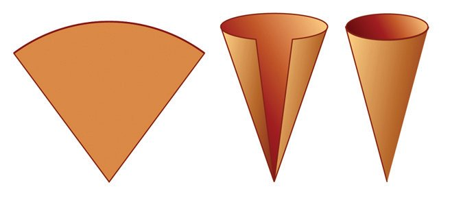<figcaption>Figure fig_ch10_p045_02 (Page 45)</figcaption></figure>
  <div class="page-content">
    <p></p>
    <p>

</p>
    <p>
</p>
    <p></p>
    <p>   
 
 
  
 
  
  
1
8</p>
    <p>   
1
8</p>
    <p>     
   
1
8</p>
    <p>  
   
1
8
1
   ×­ 
8</p>
    <p>NT-889-4-MATHS-10-E-VOL.2</p>
    <p> </p>
    <p>€  ‚ƒ
€  „ 
 
„     
 
  </p>
  </div>
</section><section class="page-section" id="page-46">
  <div class="page-header"><span class="page-number">Page 46</span></div>
  <figure class="diagram-card" id="fig_ch10_p046_01"><figcaption>Figure fig_ch10_p046_01 (Page 46)</figcaption></figure>
  <figure class="diagram-card" id="fig_ch10_p046_02"><figcaption>Figure fig_ch10_p046_02 (Page 46)</figcaption></figure>
  <figure class="diagram-card" id="fig_ch10_p046_03"><figcaption>Figure fig_ch10_p046_03 (Page 46)</figcaption></figure>
  <figure class="diagram-card" id="fig_ch10_p046_04"><figcaption>Figure fig_ch10_p046_04 (Page 46)</figcaption></figure>
  <figure class="diagram-card" id="fig_ch10_p046_05"><figcaption>Figure fig_ch10_p046_05 (Page 46)</figcaption></figure>
  <div class="page-content">
    <p>Mathematics</p>
    <p>X
The radius of the small circle forming the base of the cone is</p>
    <p>5
1
= of the
15
3</p>
    <p>radius of the large circle from which the sector is to be cut out. (How do we
get this?) So, the circumference of the small circle is also</p>
    <p>1
of the circumference
3</p>
    <p>of the large circle.
The circumference of the small circle is the arc length of the sector. Thus the
arc of the sector is
must be 360 ×</p>
    <p>1
of the circle from which it is cut out. So its central angle
3</p>
    <p>1
= 120°.
3</p>
    <p>(1)</p>
    <p>What are the radius of the base and slant height of a cone made by rolling up a
sector of central angle 60o cut out from a circle of radius 10 centimetres?</p>
    <p>(2)</p>
    <p>What is the central angle of the sector to be used to make a cone of base radius 10
centimetres and slant height 25 centimetres?</p>
    <p>(3)</p>
    <p>What is the ratio of the base-radius and slant height of a cone made by rolling up a
semicircle?
Curved surface area
As in the case of a cylinder, a cone also has a curved surface - the part which
rises up at a slant. The area of this curved surface is the area of the sector
used to make the cone. (For a cylinder also, the area of the curved surface is
the area of the rectangle rolled up to make it, isn’t it?)</p>
    <p>For a cone drawn in
GeoGebra, the curved surface area can be seen under Surface in the Algebra
window.</p>
    <p>See this problem:
To make a conical hat of base radius 8 centimetres and slant
height 30 centimetres, how much square centimetres of paper
do we need?</p>
    <p>What we need here is the area of the sector we roll up to make this hat. Since
the slant height is to be 30 centimetres, we must cut out the sector from a
circle of this radius. Also the radius of the small circle forming the base of the
cone must be 8 centimetres, that is</p>
    <p>8
4
=
of the radius of the large circle
30 15</p>
    <p>from which the sector is cut out. So the circumference of the small circle is</p>
    <p>198</p>
  </div>
</section><section class="page-section" id="page-47">
  <div class="page-header"><span class="page-number">Page 47</span></div>
  <figure class="diagram-card" id="fig_ch10_p047_01"><figcaption>Figure fig_ch10_p047_01 (Page 47)</figcaption></figure>
  <figure class="diagram-card" id="fig_ch10_p047_02"><figcaption>Figure fig_ch10_p047_02 (Page 47)</figcaption></figure>
  <figure class="diagram-card" id="fig_ch10_p047_03"><figcaption>Figure fig_ch10_p047_03 (Page 47)</figcaption></figure>
  <figure class="diagram-card" id="fig_ch10_p047_04"><figcaption>Figure fig_ch10_p047_04 (Page 47)</figcaption></figure>
  <figure class="diagram-card" id="fig_ch10_p047_05">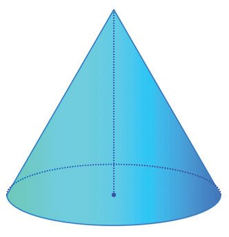<figcaption>Figure fig_ch10_p047_05 (Page 47)</figcaption></figure>
  <figure class="diagram-card" id="fig_ch10_p047_06">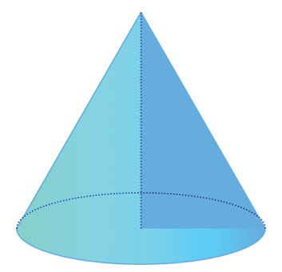<figcaption>Figure fig_ch10_p047_06 (Page 47)</figcaption></figure>
  <figure class="diagram-card" id="fig_ch10_p047_07">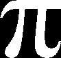<figcaption>Figure fig_ch10_p047_07 (Page 47)</figcaption></figure>
  <div class="page-content">
    <p>Solids</p>
    <p>also the same fraction of the circumference of the large circle.
The arc length of the sector is the circumference of the small
circle. Thus the sector to be cut out is</p>
    <p>4
of the full circle.
15</p>
    <p>So, its area is that fraction of the area of the circle; that is,
π × 302 ×</p>
    <p>4
= π × 2 × 30 × 4 = 240π
15</p>
    <p>Curved surface
The area of the curved surface of a
cone is the area of the sector used to
make it. If we take the base radius of
the cone as r and its slant height as l,
then the radius of the sector is l and its</p>
    <p>Thus we need 240π square centimetres of paper to make
the hat (It can be computed as approximately 754 square
centimetres).</p>
    <p>central angle is l × 360 . So its area is</p>
    <p>As in a pyramid, the height of a
cone is the perpendicular
distance from the apex to the
base, and it is the distance
between the apex and the centre
of the base circle.</p>
    <p>(Recall the computation of the area of
a sector in Class 9).</p>
    <p>r</p>
    <p>o</p>
    <p>1 ⎛r
⎞
× ⎜ × 360⎟ ×
⎠
360 ⎝ l</p>
    <p>l2 = rl</p>
    <p>nt
he
igh
t</p>
    <p>For example, in a cone of base radius 5 centimetres and height
10 centimetres the slant height is,</p>
    <p>Sla</p>
    <p>Again, as in the case of a square pyramid, the height is related
to the slant height via a right triangle.</p>
    <p>Height</p>
    <p>Height</p>
    <p>Thus the area of the curved surface of
a cone is half the product of the base
circumference and the slant height.</p>
    <p>Base radius</p>
    <p>52 + 10 2 = 125 = 5 5 centimetres</p>
    <p>(1)</p>
    <p>What is the area of the curved surface of a cone of base radius
12 centimetres and slant height 25 centimetres?</p>
    <p>(2)</p>
    <p>What is the surface area of a cone of base diameter 30 centimetres
and height 40 centimetres?</p>
    <p>(3)</p>
    <p>A conical fire work is of base diameter 10 centimetres and height
12 centimetres. 10000 such fireworks are to be wrapped in colour
paper. The price of the colour paper is 2 rupees per square metre.
What is the total cost?</p>
    <p>199</p>
  </div>
</section><section class="page-section" id="page-48">
  <div class="page-header"><span class="page-number">Page 48</span></div>
  <figure class="diagram-card" id="fig_ch10_p048_01"><figcaption>Figure fig_ch10_p048_01 (Page 48)</figcaption></figure>
  <figure class="diagram-card" id="fig_ch10_p048_02"><figcaption>Figure fig_ch10_p048_02 (Page 48)</figcaption></figure>
  <figure class="diagram-card" id="fig_ch10_p048_03"><figcaption>Figure fig_ch10_p048_03 (Page 48)</figcaption></figure>
  <figure class="diagram-card" id="fig_ch10_p048_04"><figcaption>Figure fig_ch10_p048_04 (Page 48)</figcaption></figure>
  <figure class="diagram-card" id="fig_ch10_p048_05"><figcaption>Figure fig_ch10_p048_05 (Page 48)</figcaption></figure>
  <div class="page-content">
    <p>Mathematics</p>
    <p>(4)</p>
    <p>X
Prove that for a cone made by rolling up a semicircle, the area of the
curved surface is twice the base area.
Volume of a cone
To find the volume of a cone, we can do an experiment similar to the one we
did to find the volume of a square pyramid. Make a cone and a cylinder of the
same base and height. Fill the cone with sand and transfer it to the cylinder.
Here also, we can see that the volume of the cone is a third of the volume of
the cylinder. Thus we have the following:
The volume of a cone is equal to a third of the product of the
base area and height.</p>
    <p>As in the case of square
pyramids, draw a
cylinder and a cone of
same base and height in
GeoGebra. Compare
their volumes.</p>
    <p>(A mathematical explanation of this also is given at the end of this lesson)
For example, the volume of a cone of base radius 4 centimetres and
height 6 centimetres is
1
× π × 42 × 6 = 32π cubic centimetres.
3</p>
    <p>(1)</p>
    <p>The base radius and height of a cylindrical block of wood are 15
centimetres and 40 centimetres. What is the volume of the largest cone
that can be carved out of this?</p>
    <p>(2)</p>
    <p>The base radius and height of a solid metal cylinder are 12 centimetres
and 20 centimetres. By melting it and recasting, how many cones of
base radius 4 centimetres and height 5 centimetres can be made?</p>
    <p>(3)</p>
    <p>A sector of central angle 216o is cut out from a circle of radius 25
centimetres and is rolled up into a cone. What are the base radius and
height of the cone? What is its volume?</p>
    <p>(4)</p>
    <p>The base radii of two cones are in the ratio 3 : 5 and their heights are in
the ratio 2 : 3. What is the ratio of their volumes?</p>
    <p>(5)</p>
    <p>Two cones have the same volume and their base radii are in the ratio
4 : 5. What is the ratio of their heights?</p>
    <p>200</p>
  </div>
</section><section class="page-section" id="page-49">
  <div class="page-header"><span class="page-number">Page 49</span></div>
  <figure class="diagram-card" id="fig_ch10_p049_01"><figcaption>Figure fig_ch10_p049_01 (Page 49)</figcaption></figure>
  <figure class="diagram-card" id="fig_ch10_p049_02"><figcaption>Figure fig_ch10_p049_02 (Page 49)</figcaption></figure>
  <figure class="diagram-card" id="fig_ch10_p049_03">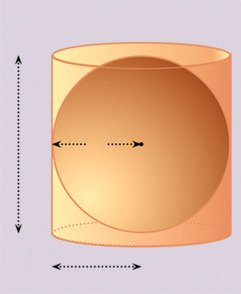<figcaption>Figure fig_ch10_p049_03 (Page 49)</figcaption></figure>
  <figure class="diagram-card" id="fig_ch10_p049_04">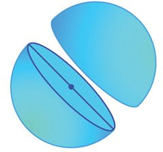<figcaption>Figure fig_ch10_p049_04 (Page 49)</figcaption></figure>
  <div class="page-content">
    <p>Solids</p>
    <p>Sphere
Round solids enter our lives in various ways as the thrill of ball games and as the sweetness
of laddus. Now let’s look at the mathematics
of such solids called spheres.
It we slice a cylinder or cone parallel to a base,
we get a circle. In whatever way we slice a
sphere, we get a circle.
The distance of any point on a circle from the centre is the
same. A sphere also has a centre, from which the distance
to any point on its surface is the same. This distance is called
the radius of the sphere and double this is called the diameter.
If we slice a sphere into exact
halves, we get a circle whose
centre, radius and diameter are
those of the sphere itself.
We cannot cut open a sphere and
spread it flat, as we did with other solids. The fact is that we
cannot make the surface of a sphere flat without some folding
or stretching.
But we can prove that the surface area of a sphere of radius
r is 4πr2 (An explanation is given at the end of the lesson).
The surface area of a sphere is equal to the
square of its radius multiplied by 4p.</p>
    <p>Sphere and cylinder
Consider a cylinder which can cover a
sphere precisely. Its base radius is the
radius of the sphere and its height is
double
its
radius.
So if we take
the radius of
2r
the sphere as r,
the base radius
and height of
the cylinder
are r and 2r.
So its surface area is</p>
    <p>r</p>
    <p>r</p>
    <p>(2πr × 2r) + (2 × πr2) = 6πr2</p>
    <p>The surface area of the sphere is 4πr2
Thus the ratio of these surface areas
is 3 : 2.</p>
    <p>.</p>
    <p>Again, the volume of the cylinder is</p>
    <p>Also, we can prove that the volume of a sphere of radius r
4</p>
    <p>is 3 πr3 (An explanation of this also is given at the end of the
lesson.)</p>
    <p>201</p>
    <p>πr2 × 2r = 2πr3</p>
    <p>and the volume of the sphere is
4 3
πr , so that the ratio of the volumes
3
is also 3 : 2</p>
  </div>
</section><section class="page-section" id="page-50">
  <div class="page-header"><span class="page-number">Page 50</span></div>
  <figure class="diagram-card" id="fig_ch10_p050_01"><figcaption>Figure fig_ch10_p050_01 (Page 50)</figcaption></figure>
  <figure class="diagram-card" id="fig_ch10_p050_02">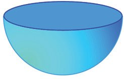<figcaption>Figure fig_ch10_p050_02 (Page 50)</figcaption></figure>
  <figure class="diagram-card" id="fig_ch10_p050_03">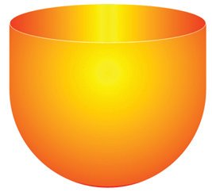<figcaption>Figure fig_ch10_p050_03 (Page 50)</figcaption></figure>
  <figure class="diagram-card" id="fig_ch10_p050_04">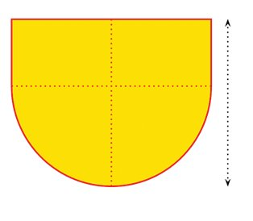<figcaption>Figure fig_ch10_p050_04 (Page 50)</figcaption></figure>
  <figure class="diagram-card" id="fig_ch10_p050_05">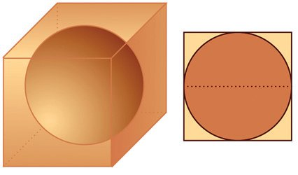<figcaption>Figure fig_ch10_p050_05 (Page 50)</figcaption></figure>
  <div class="page-content">
    <p>X
See this problem:
What is the surface area of the largest sphere that can be carved
from a cube of edges 8 centimetres?
We can see from the picture that the diameter of the
sphere is the length of an edge of the cube. So, the
surface area of the sphere is</p>
    <p>8 cm</p>
    <p>4π × 42 = 64π square centimetres
8 cm</p>
    <p>Another problem:
A solid sphere of radius 12 centimetres
is cut into two equal halves. What is
the surface area of each hemisphere?
The surface of the hemisphere consists of half
the surface of the sphere and a circle.
Since the radius of the sphere is 12 centimetres, its area is,
4π × 122 = 576π square centimetres
Since the radius of the circle is 12 centimetres, its area is
π × 122 = 144π square centimetres
So the surface area of the hemisphere is,
1
× 576π + 144π = 432π square centimetres
2</p>
    <p>One more example:</p>
    <p>1.5 metre</p>
    <p>1.5 metre</p>
    <p>202</p>
    <p>2.5 metre</p>
    <p>A water tank is in the shape of a hemisphere attached to a cylinder. Its
radius is 1.5 metres and the total height is 2.5 metres. How many litres
of water can it hold?</p>
    <p>1.5 metre</p>
    <p>Mathematics</p>
  </div>
</section><section class="page-section" id="page-51">
  <div class="page-header"><span class="page-number">Page 51</span></div>
  <figure class="diagram-card" id="fig_ch10_p051_01"><figcaption>Figure fig_ch10_p051_01 (Page 51)</figcaption></figure>
  <figure class="diagram-card" id="fig_ch10_p051_02"><figcaption>Figure fig_ch10_p051_02 (Page 51)</figcaption></figure>
  <figure class="diagram-card" id="fig_ch10_p051_03"><figcaption>Figure fig_ch10_p051_03 (Page 51)</figcaption></figure>
  <figure class="diagram-card" id="fig_ch10_p051_04"><figcaption>Figure fig_ch10_p051_04 (Page 51)</figcaption></figure>
  <figure class="diagram-card" id="fig_ch10_p051_05"><figcaption>Figure fig_ch10_p051_05 (Page 51)</figcaption></figure>
  <figure class="diagram-card" id="fig_ch10_p051_06">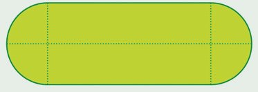<figcaption>Figure fig_ch10_p051_06 (Page 51)</figcaption></figure>
  <figure class="diagram-card" id="fig_ch10_p051_07"><figcaption>Figure fig_ch10_p051_07 (Page 51)</figcaption></figure>
  <div class="page-content">
    <p>Solids</p>
    <p>The volume of the hemispherical part of the tank is,
2
π × (1.5)3 = 2.25π cubic metres.
3</p>
    <p>And the volume of the cylindrical part is
π × (1.5)2 (2.5 − 1.5) = 2.25π cubic metres.
So, the total volume is
2.25π + 2.25π = 4.5π ≈ 14.13 cubic metres.
Since one cubic metre is 1000 litres, the tank can hold about 14130 litres of
water.
(1)</p>
    <p>The surface area of a solid sphere is 120 square centimetres. If it is cut
into two halves, what would be the surface area of each hemisphere?</p>
    <p>(2)</p>
    <p>The volumes of two spheres are in the ratio 27 : 64. What is the ratio of
their radii? And the ratio of their surface areas?</p>
    <p>(3)</p>
    <p>The base radius and length of a metal cylinder are 4 centimetres and
10 centimetres. If it is melted and recast into spheres of radius 2
centimetres each, how many spheres can be made?</p>
    <p>(4)</p>
    <p>A metal sphere of radius 12 centimetres is melted and recast into
27 small spheres of equal size. What is the radius of each small sphere?</p>
    <p>(5)</p>
    <p>From a solid sphere of radius 10 centimetres, a cone of height
16 centimetres is carved out. What fraction of the volume of the sphere
is the volume of the cone?</p>
    <p>(6)</p>
    <p>The picture shows the dimensions of a petrol tank.
2 metres</p>
    <p>1 metre 1 metre</p>
    <p>6 metres</p>
    <p>How many litres of petrol can it hold?</p>
    <p>203</p>
  </div>
</section><section class="page-section" id="page-52">
  <div class="page-header"><span class="page-number">Page 52</span></div>
  <figure class="diagram-card" id="fig_ch10_p052_01"><figcaption>Figure fig_ch10_p052_01 (Page 52)</figcaption></figure>
  <figure class="diagram-card" id="fig_ch10_p052_02"><figcaption>Figure fig_ch10_p052_02 (Page 52)</figcaption></figure>
  <figure class="diagram-card" id="fig_ch10_p052_03">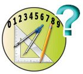<figcaption>Figure fig_ch10_p052_03 (Page 52)</figcaption></figure>
  <figure class="diagram-card" id="fig_ch10_p052_04"><figcaption>Figure fig_ch10_p052_04 (Page 52)</figcaption></figure>
  <div class="page-content">
    <p>Mathematics</p>
    <p>(7)</p>
    <p>X
A solid sphere is cut into two hemispheres. From one, a square pyramid
and from the other a cone, each of maximum possible size are carved
out. What is the ratio of their volumes?
What is the speciality of the lateral faces of a square
pyramid of maximum volume that can be cut out from a
solid hemisphere?</p>
    <p>204</p>
  </div>
</section><section class="page-section" id="page-53">
  <div class="page-header"><span class="page-number">Page 53</span></div>
  <figure class="diagram-card" id="fig_ch10_p053_01"><figcaption>Figure fig_ch10_p053_01 (Page 53)</figcaption></figure>
  <figure class="diagram-card" id="fig_ch10_p053_02">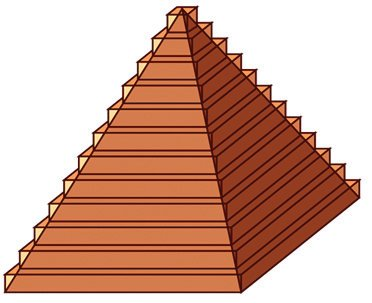<figcaption>Figure fig_ch10_p053_02 (Page 53)</figcaption></figure>
  <figure class="diagram-card" id="fig_ch10_p053_03">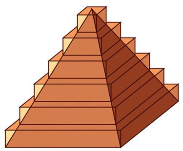<figcaption>Figure fig_ch10_p053_03 (Page 53)</figcaption></figure>
  <figure class="diagram-card" id="fig_ch10_p053_04">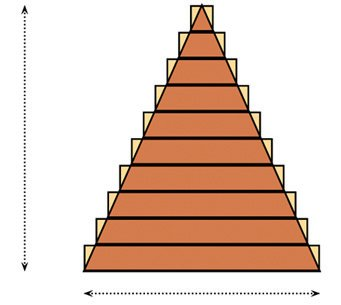<figcaption>Figure fig_ch10_p053_04 (Page 53)</figcaption></figure>
  <div class="page-content">
    <p>Solids</p>
    <p>Appendix
We have seen only the techniques of calculating volumes of pyramids and
cones, and also the surface area and volume of a sphere. For those who may
be interested in knowing how they are actually got, we give some explanations
below.
Volume of a pyramid
We can think of a stack of square plates,
of decreasing size as an approximation to
a square pyramid.</p>
    <p>As we decrease the thickness of the plates
and increase their number, we get better
approximations.</p>
    <p>And the sum of the volumes of these plates get nearer to the volume of the
pyramid.
Suppose we use 10 plates, to start with. Each plate is a square prism of small
height. Let’s use plates of same height. So, if we take the height of the pyramid
1</p>
    <p>as h, each plate is of height 10 h . How do we compute the base of each
plate?
If we imagine the pyramid and the stack
of plates sliced vertically down from the
vertex, we get a picture like this.</p>
    <p>h</p>
    <p>b</p>
    <p>Starting from the top, we have isosceles triangles of increasing size. Their
1</p>
    <p>heights increase at the rate of 10 h for each plate.
205</p>
  </div>
</section><section class="page-section" id="page-54">
  <div class="page-header"><span class="page-number">Page 54</span></div>
  <figure class="diagram-card" id="fig_ch10_p054_01"><figcaption>Figure fig_ch10_p054_01 (Page 54)</figcaption></figure>
  <div class="page-content">
    <p>Mathematics</p>
    <p>X</p>
    <p>Since these triangles are all similar (why?) their bases also increase
at the same rate. So, if we take the base edge of the bases of the pyramid to
1</p>
    <p>2</p>
    <p>be b, the bases of the triangles starting from the top are 10 b, 10 b, ...., b.
So, the volumes of the plates are
2</p>
    <p>2</p>
    <p>1 ⎛2 ⎞
1
1
⎛1 ⎞
2
⎜⎝ b⎟⎠ × h, ⎜⎝ b⎟⎠ × h, ..., b × h
10
10 10
10
10</p>
    <p>And their sum?
1 2 ⎛ 1
22
92 102 ⎞
1 2 2
b h ⎜ 2 + 2 + ... + 2 + 2 ⎟ =
b h (1 + 2 2 + 32 + ... + 10 2 )
10
10
10
10
10
1000
⎝
⎠</p>
    <p>We have seen how such sums can be computed in the section, Sum of squares
of the lesson, Arithmetic Sequences.
1</p>
    <p>12 + 22 + 32 + ... + 102 = 6 × 10 × (10 + 1) × (2 × 10 + 1)
Thus the sum of the volumes
1 2 1
1
10 11 21 1 2
b h × × 10 × 11 × 21 = b 2 h × × ×
= b h × 1.1 × 2.1
1000
6
6
10 10 10 6</p>
    <p>Now imagine 100 such plates (we cannot draw it anyway.)
1</p>
    <p>The thickness of a plate becomes 100 h and the base edges would be
1
2
3
b,
b,
b,..., b . So the sum of the volumes would be
100 100 100
1 2
1
1 2 2
b h × × 100 × 101 × 201
b h (1 + 2 2 + 32 + ... + 100 2 ) =
1003
6
1003</p>
    <p>=</p>
    <p>1 2 100 101 210
b h×
×
×
6
100 100 100</p>
    <p>1
= b 2 h × 1.01 × 2.01
6</p>
    <p>What if we increase the number of plates to 1000? Without going through
detailed computations, we can see that the sum of volumes would be
1 2
b h × 1.001 × 2.001
6</p>
    <p>What is the number to which these sums get closer and closer to?
It is the volume of the pyramid; and it is
1 2
1
b h × 1 × 2 = b2h
6
3</p>
    <p>206</p>
  </div>
</section><section class="page-section" id="page-55">
  <div class="page-header"><span class="page-number">Page 55</span></div>
  <figure class="diagram-card" id="fig_ch10_p055_01"><figcaption>Figure fig_ch10_p055_01 (Page 55)</figcaption></figure>
  <figure class="diagram-card" id="fig_ch10_p055_02">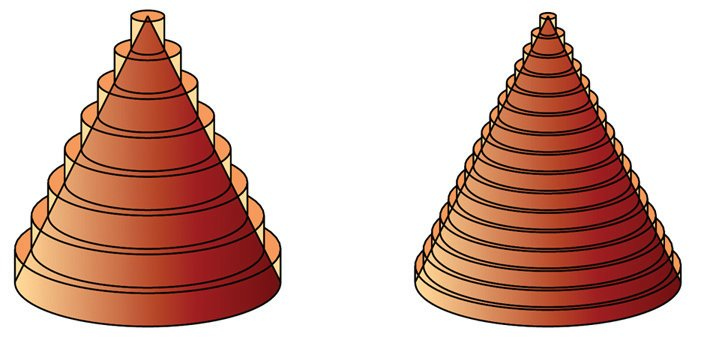<figcaption>Figure fig_ch10_p055_02 (Page 55)</figcaption></figure>
  <figure class="diagram-card" id="fig_ch10_p055_03">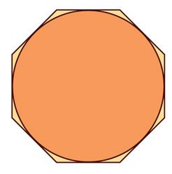<figcaption>Figure fig_ch10_p055_03 (Page 55)</figcaption></figure>
  <figure class="diagram-card" id="fig_ch10_p055_04">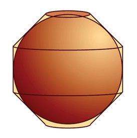<figcaption>Figure fig_ch10_p055_04 (Page 55)</figcaption></figure>
  <figure class="diagram-card" id="fig_ch10_p055_05">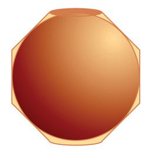<figcaption>Figure fig_ch10_p055_05 (Page 55)</figcaption></figure>
  <figure class="diagram-card" id="fig_ch10_p055_06">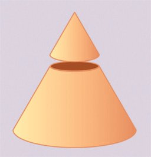<figcaption>Figure fig_ch10_p055_06 (Page 55)</figcaption></figure>
  <figure class="diagram-card" id="fig_ch10_p055_07">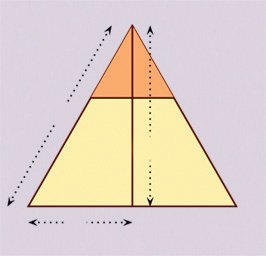<figcaption>Figure fig_ch10_p055_07 (Page 55)</figcaption></figure>
  <figure class="diagram-card" id="fig_ch10_p055_08">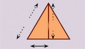<figcaption>Figure fig_ch10_p055_08 (Page 55)</figcaption></figure>
  <div class="page-content">
    <p>Solids</p>
    <p>Volume of a cone
Just as we stacked square plates to approximate a pyramid, we can stack
circular plates to approximate a cone.</p>
    <p>And in much the same way, we can
compute the volume of a cone also.
(Try!)
Surface area of a sphere
First consider a circle through the middle of the
sphere and a regular polygon with its sides
touching it;</p>
    <p>Now if this figure revolves, we get the sphere
and a solid just covering it.</p>
    <p>Small and large
Cutting a cone parallel to the base, we get a small
cone on top.</p>
    <p>What is the relation between the dimensions of
the small and large cones?
If we take the base radius, height and slant height
of the large cone as R, H, L and those of the small
cone as r, h, l, we get
r
h
l
=
=
R H L</p>
    <p>In the picture above, this solid can be split into
two frustums and a cylinder.</p>
    <p>l</p>
    <p>h
r</p>
    <p>L
H</p>
    <p>R</p>
    <p>207</p>
  </div>
</section><section class="page-section" id="page-56">
  <div class="page-header"><span class="page-number">Page 56</span></div>
  <figure class="diagram-card" id="fig_ch10_p056_01"><figcaption>Figure fig_ch10_p056_01 (Page 56)</figcaption></figure>
  <figure class="diagram-card" id="fig_ch10_p056_02">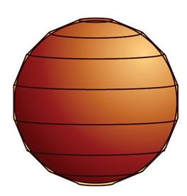<figcaption>Figure fig_ch10_p056_02 (Page 56)</figcaption></figure>
  <figure class="diagram-card" id="fig_ch10_p056_03">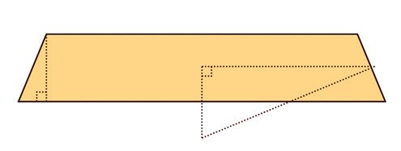<figcaption>Figure fig_ch10_p056_03 (Page 56)</figcaption></figure>
  <figure class="diagram-card" id="fig_ch10_p056_04">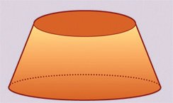<figcaption>Figure fig_ch10_p056_04 (Page 56)</figcaption></figure>
  <figure class="diagram-card" id="fig_ch10_p056_05">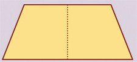<figcaption>Figure fig_ch10_p056_05 (Page 56)</figcaption></figure>
  <div class="page-content">
    <p>Mathematics</p>
    <p>X</p>
    <p>As we increase the number of sides of the polygon, the
covering solid approximates the sphere better.
Frustum of a cone
If we cut off a small cone from the top of a
cone, the remaining piece is called the frustum
of a cone.</p>
    <p>How do we find the area of the curved surface
of a frustum in terms of its slant height and
base radii?</p>
    <p>To compute the area of the curved surface of these
frustums, let’s consider one of these. Let’s take its
height as h and the radius of its middle circle as m.
Let’s also take the radius of the sphere as r and the
length of a side of the covering polygon as a. We then
have a figure like this.</p>
    <p>a</p>
    <p>m</p>
    <p>h</p>
    <p>r</p>
    <p>r
d</p>
    <p>The two right triangles in the figure are similar and
so</p>
    <p>R</p>
    <p>Taking the slant heights of the large and small
cones as L and l, we get the d in the figure
above as d = L − l. So the surface area of the
frustum is,
πRL − πrl = π(RL − rl)
= π(R(l + d) − rl)
= π(Rl + Rd − rl)
Now, as seen earlier, we have</p>
    <p>r l
= . So that
R L</p>
    <p>Rl = rL. Using this, the area of the curved
surface is,
π(rL + Rd − rl) = π(r(L − l) + Rd)
= π(rd + Rd)
= π(r + R)d</p>
    <p>m h
=
r a</p>
    <p>which can be written as
am = rh
The area of the curved surface of the frustum got by
revolving this is 2πma, as shown in the side bar.
Frustum and cylinder, on the last page. And this is
equal to 2πrh , by the above equation; that is, the
area of the curved surface of a cylinder of base radius
r and height h.
So what do we get? In the solid which approximates
the sphere, the curved surface area of each frustum
is equal to that of a cylinder of the same height with
base radius equal to that of the sphere.</p>
    <p>208</p>
  </div>
</section><section class="page-section" id="page-57">
  <div class="page-header"><span class="page-number">Page 57</span></div>
  <figure class="diagram-card" id="fig_ch10_p057_01"><figcaption>Figure fig_ch10_p057_01 (Page 57)</figcaption></figure>
  <figure class="diagram-card" id="fig_ch10_p057_02"><figcaption>Figure fig_ch10_p057_02 (Page 57)</figcaption></figure>
  <figure class="diagram-card" id="fig_ch10_p057_03"><figcaption>Figure fig_ch10_p057_03 (Page 57)</figcaption></figure>
  <figure class="diagram-card" id="fig_ch10_p057_04"><figcaption>Figure fig_ch10_p057_04 (Page 57)</figcaption></figure>
  <figure class="diagram-card" id="fig_ch10_p057_05"><figcaption>Figure fig_ch10_p057_05 (Page 57)</figcaption></figure>
  <div class="page-content">
    <p>Solids</p>
    <p>So the curved surface area of the whole approximating solid is
equal to the sum of the curved surface areas of all these cylinders.
And what do we get on putting together all these cylinders? A
large cylinder, just covering the sphere.
As we increase the number of sides of the polygon covering the circle, it
becomes more circle-like; and the solid covering the sphere becomes more
sphere-like. As seen just now, the curved surface area of any such solid is
equal to the curved surface area of a cylinder just covering the sphere. So the
surface area of the sphere is also equal to the area of the curved surface of
this cylinder. Since the base radius of the cylinder is r and its height is 2r, the
area of its curved surface is
2π × r × 2r = 4πr2
Volume of a sphere
See these pictures:</p>
    <p>A sphere is divided into cells by
horizontal and vertical circles. If we join
the corners of such a cell to the centre
of the sphere, we get a pyramid-like
solid.</p>
    <p>The sphere is made up of such solids joined together; and so the volume of
the sphere is the sum of the volumes of these solids. Now if we change each
cell into an actual square which touches the sphere, we get a solid which just
covers the sphere; and the solid is made up of actual square pyramids. The
heights of all these pyramids are equal to the radius of the sphere. If we take
1</p>
    <p>it as r and the base area of a pyramid as a, the volume of a pyramid is 3 ar.</p>
    <p>209</p>
  </div>
</section><section class="page-section" id="page-58">
  <div class="page-header"><span class="page-number">Page 58</span></div>
  <figure class="diagram-card" id="fig_ch10_p058_01"><figcaption>Figure fig_ch10_p058_01 (Page 58)</figcaption></figure>
  <figure class="diagram-card" id="fig_ch10_p058_02"><figcaption>Figure fig_ch10_p058_02 (Page 58)</figcaption></figure>
  <figure class="diagram-card" id="fig_ch10_p058_03"><figcaption>Figure fig_ch10_p058_03 (Page 58)</figcaption></figure>
  <figure class="diagram-card" id="fig_ch10_p058_04"><figcaption>Figure fig_ch10_p058_04 (Page 58)</figcaption></figure>
  <figure class="diagram-card" id="fig_ch10_p058_05"><figcaption>Figure fig_ch10_p058_05 (Page 58)</figcaption></figure>
  <div class="page-content">
    <p>Mathematics</p>
    <p>X</p>
    <p>Frustum and cylinder
We have seen that the area of the curved
surface of a frustum is π(r + R)d</p>
    <p>The volume of the solid covering the sphere is the
sum of the volumes of all such pyramids. The bases
of all such pyramids make up the surface of the solid,
so that the sum of the base areas of the pyramids is
the surface area of this solid. If it is taken as s, the</p>
    <p>Taking the radius of the circle round its middle
as x, we get a figure like this:</p>
    <p>1</p>
    <p>volume of the solid would be 3 sr.
As we decrease the size of the cells and increase</p>
    <p>r
x</p>
    <p>d</p>
    <p>R</p>
    <p>their number, the solid covering the sphere
approximates the sphere better; and the surface area</p>
    <p>Let’s draw one more line:</p>
    <p>of the solid gets closer to the surface area of the</p>
    <p>r
x</p>
    <p>sphere. Since the surface area of the sphere is 4πr2,</p>
    <p>R</p>
    <p>the volume of the solid gets closer to the number</p>
    <p>From the two similar right triangles on the right,
x−r 1
=
R−r 2</p>
    <p>And this is the volume of the sphere.</p>
    <p>Simplifying, this gives
x=</p>
    <p>1
4
× 4πr2 × r = 3 πr3
3</p>
    <p>1
(R + r)
2</p>
    <p>So, the area of the curved surface of the frustum
can be written 2πxd.
But this is the area of the curved surface of a
cylinder of base radius x and height d.
x
d</p>
    <p>210</p>
  </div>
</section>
    </main>

    <footer>
      <div class="nav-bar"><a href="chapter_09_solids.html">← Chapter 9: Solids</a><a href="index.html">☰ Index</a><a href="chapter_11_polynomials.html">Chapter 11: Polynomials →</a></div>
      <p style="text-align: center; font-size: 0.85rem; color: var(--text-muted); margin-top: 2rem;">
        Kerala SCERT Class 10 Mathematics (English Medium) - Extracted Study Text
      </p>
    </footer>
  </div>
</body>
</html>
